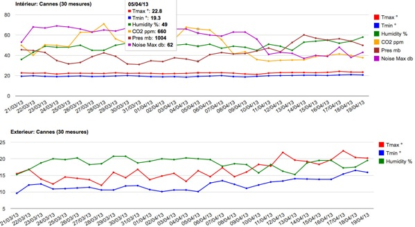
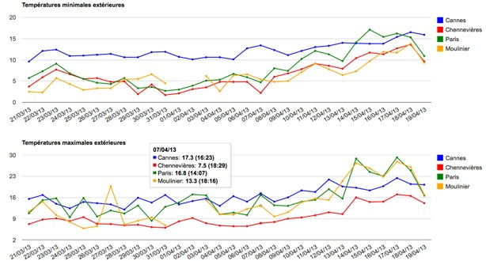

This program uses the Netatmo php sdk and some Google development tools for the graphics.
The server needs to have a php version >= 5, with curl and json enabled.
If you have a Netatmo account, you can see a demo at Netatmo
or Netatmo 2.
This last link presents a new interface.
Main windows:
- Display the last measures on a Google map of all the stations and their modules
(The Google map provides weather forecast and cloud cover),
- Graphics of the measures of one station
(max, 30 minutes, 3 hours, 1 day or 1 week interval for a given period),
- Graphics of the temperatures of selected stations (1 day or 1 week),
five or six stations seems a limit for visibility.
Remarks:
- If the measure interval is 30 minutes, the period of measures is 14 days
before the end of measures.
- If the measure interval is 5 minutes, the period of measures is 2 days
before the end of measures.
- The weekly measures always end on Thursdays.
- If you replace index.php by indexNetatmo.php, you will be forwarded
to the Netatmo site for identification.
- If you filled config.php with your username and password, you will be automatically loged
Install:
- Unzip the archive
- Put your personal information in Config.php
- open index.php in your web browser
Screenshots:
Last mesures

Graphics
| Graphics of one station | Temperatures of 4 stations | |
|  |
 |